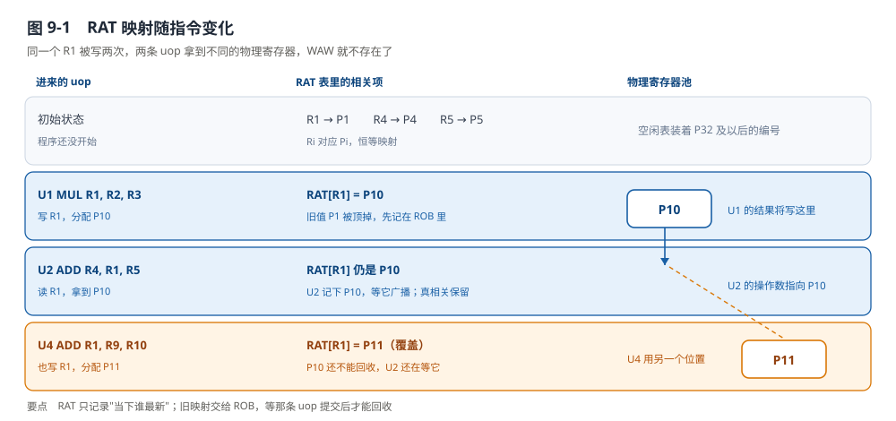
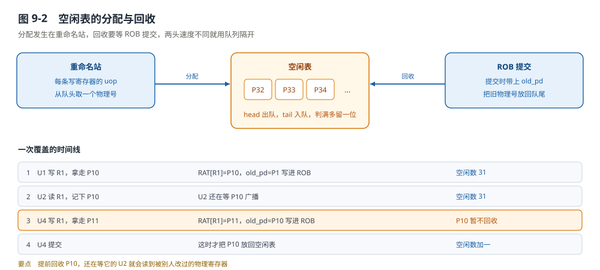
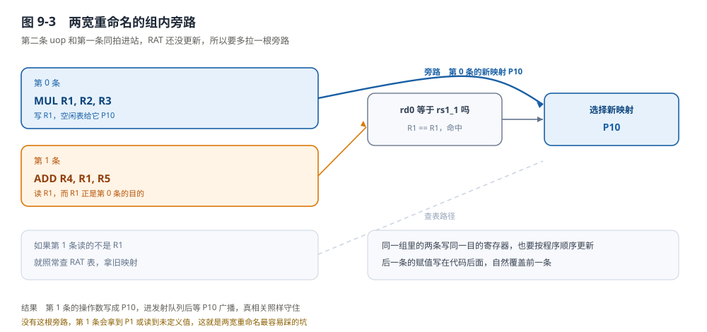
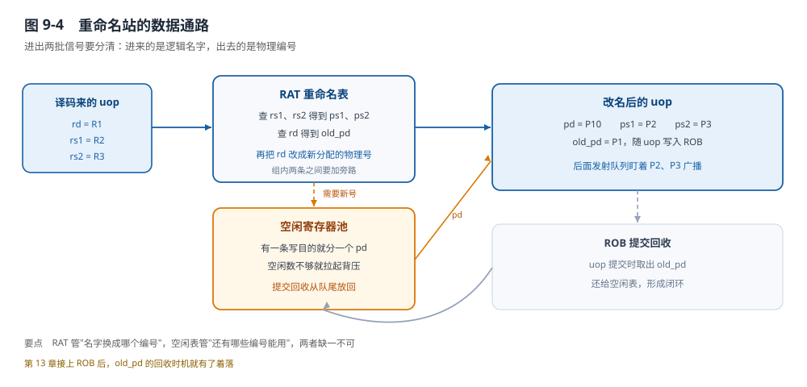

第 9 章 寄存器重命名
第 8 章的地图上，第一站叫重命名。它站在乱序段的最前面，uop 一进后端就先在这里换名字。换完名字，后面的发射队列才知道该等谁、执行单元才知道结果往哪送。
这一章把这个站点拆开来看。第 3 章讲 Tomasulo 时已经用过”标签”这个词：写寄存器的指令领一个标签，读寄存器的指令记下自己等哪个标签。那时标签寄存在保留站的编号里，有点借住的意思。现在要给标签一个正式的家，它就是物理寄存器编号。本章要回答三个问题：换成什么名字，谁来管这张对照表，旧名字什么时候还回去。
9.1 为什么寄存器要换名字
先把全书那条熟悉的例子再摆一次。为了聚焦后端，假设前端已经把指令译码成了 uop。
U1 MUL R1, R2, R3 # 写 R1，慢
U2 ADD R4, R1, R5 # 读 R1，依赖 U1；读 R5
U3 SUB R6, R7, R8 # 独立指令
U4 ADD R1, R9, R10 # 也写 R1
U5 XOR R5, R11, R12 # 写 R5RISC-V 指令集规定程序员能看到 32 个整数寄存器，R1 只有一个。如果不做点什么，U1 和 U4 都得往 R1 写，顺序一乱就可能把结果写反；U2 要读 R5 的旧值，U5 却可能提前把 R5 改掉。
第 2 章已经分析过，后面这条是 WAR，前面那条是 WAW，都是名字撞车造成的伪相关。当时的解法是”换个名字”。现在把这个解法落实成电路：
- 处理器里实际做出比 32 个更多的物理寄存器，比如 64 个，编号 P0 到 P63；
- U1 写 R1 时，从空闲堆里拿一个物理寄存器，比如 P10；
- U4 也写 R1 时，再拿一个，比如 P11；
- 谁代表”最新的 R1”，由一张表说了算，这张表就是重命名表。
于是 U1 把结果放 P10，U4 把结果放 P11，两条并行算、谁先算完都行。U2 在进后端时记下”R1 此刻对应 P10”，它等的是 P10 的广播，U4 改不改 R1 的登记跟它没关系。U5 改 R5 也是同理，U2 手里那份 R5 的旧编号已经取走了。
一句话概括这一步：程序员看到的寄存器是名字，处理器内部用的是位置。重命名就是把名字翻译成位置，让在飞的每条写指令各占一个位置。
9.2 逻辑寄存器和物理寄存器
这里要把两个词分清楚，后面才不会绕晕。
逻辑寄存器是指令集里写的 R1、R2。它是程序员和编译器看到的接口， RISCV 规定整数逻辑寄存器有 32 个。编译器排指令时只能使用这些名字，它不知道芯片里到底有多少个存储位置。
物理寄存器是芯片里真正能放数的触发器或存储单元。它的数量可以比逻辑寄存器多，多出来的部分专门供乱序执行周转。物理寄存器编号通常用 P 开头，比如 P10、P33。
从逻辑寄存器到物理寄存器的对照关系存在重命名表里，英文常写作 RAT。机器复位时可以把表初始化成 Ri 对应 Pi 的恒等映射，这样没有乱序发生时的行为看起来最朴素。之后每遇到一条写寄存器的 uop，就从空闲池里取一个新的物理号，把表里相应的一项改掉。
物理寄存器本身也是标签。一条 uop 的操作数被改写成 P10 之后，发射队列就盯着 P10，等它出现在结果总线上。这样第 3 章那个”等标签”的说法，在这里变成了”等某个物理寄存器被写回”。同一套道理，换了种记账方式。
多出来的物理寄存器不是白送的。它们是乱序窗口的燃料：同时在飞的写指令越多，需要的物理寄存器越多。用完了就得停下来等提交回收，这也是重命名站会产生背压的原因。
9.3 重命名表记什么
RAT 的表项很朴素，逻辑寄存器号作地址，表项内容是一个物理寄存器号。复位后 Ri 对应 Pi。表之外还要记两件事。
第一件是旧映射。把 RAT[R1] 从 P1 改成 P10 之前，得先把 P1 保存下来，随 uop 一起送到 ROB。为什么不能直接把 P1 扔回空闲池？因为可能还有在飞的指令读的是 R1 的旧值，它手里的编号正是 P1。回收的时机留到第 9.4 节讲。
第二件是 x0。RISC-V 的 x0 永远是零，不能被改名。电路里做法很简单：目的寄存器号为零时，不发写使能。
写指令和读指令查表的方式不同。
- 写指令的目的寄存器 rd 要分配新号 pd，更新 RAT[rd]，并输出改动前的 old_pd。
- 读指令的源寄存器 rs1、rs2 要查表，得到 ps1、ps2。查到的物理号如果还没被写回，就当作等待标签用；如果已经就绪，发射队列自然能拿到值。就绪与否由物理寄存器堆和发射队列管理，重命名这一站只负责给出正确编号。
图 9-1 把两次写 R1 的过程画了出来。

图 9-1 U1 和 U4 都写 R1，分别拿到 P10 和 P11；RAT 只登记最新的一条，旧映射交给 ROB。
看这张图时有个容易忽略的地方。U2 在 U1 之后、U4 之前读 R1，所以它拿到的是 P10。如果它的位置挪到 U4 之后，拿到的就应该是 P11。也就是说，重命名反映的是程序顺序上的”当下”，顺序一乱，谁的登记算数就没法判定了。这正是重命名必须按程序顺序进行的原因。
9.4 空闲表与旧值回收
空闲物理寄存器放在一个循环队列里，通常叫空闲表。重命名时从队头取，提交时往队尾放。第 4 章讲 FTQ、第 6 章讲指令缓冲队列时，已经见过这种环形缓冲的套路，这里只是把存的东西换成物理寄存器号。
回收时机是这一站最容易出错的地方。继续用上面的例子，把时间线拉开看。
- U1 写 R1，分到 P10。RAT[R1] 从 P1 改成 P10，P1 被记为 U1 的 old_pd。
- U2 读 R1，记下 P10。它在发射队列里等 P10 的结果。
- U4 写 R1，分到 P11。RAT[R1] 从 P10 改成 P11，P10 被记为 U4 的 old_pd。
- 此时 P10 能回收吗？不能。U2 还在等它，一旦 P10 被分给别人，U2 等到的就是别人的结果。
- 一直等到 U4 提交，才说明”R1 从 P10 变成 P11”这件事已经对程序员生效，这之前的结果不可能再被需要。这时把 P10 放回空闲表才安全。
图 9-2 把这条时间线画成了图。

图 9-2 分配发生在重命名，回收发生在提交。旧物理寄存器要等覆盖它的那条 uop 提交后才能回到空闲表。
这里可以记一句不太严谨但好用的话：旧值的寿命，取决于谁把它挤下去，而不是它自己什么时候算完。U1 算完得再快，它占的 P1 也要等 U1 提交才能还；P10 虽然被 U4 挤掉了，却要等 U4 提交，因为中间还有 U2 在等它。
空闲表空了怎么办？只能停下来。重命名站拉起背压，前端暂缓送 uop 进来，直到有旧的物理寄存器被提交释放。第 13 章接上 ROB 后，这条回收通路就完整了。本书的代码里先把它留成一个外部输入端口，谁在什么时候调用它，由那一章补齐。
9.5 两宽重命名的组内依赖
本书的教学核每周期重命名两条 uop。宽度一上来，就多了一件麻烦事：同一周期进来的两条之间可能本身就有依赖。
还看那两条：
第 0 条 MUL R1, R2, R3
第 1 条 ADD R4, R1, R5第 1 条读的 R1，正是第 0 条这一拍要写的。RAT 要到这一拍结束才更新，如果第 1 条老老实实查表，拿到的还是旧映射，真相关就丢了。
办法是加一根旁路。第 1 条查表的同时，拿自己的源寄存器号和第 0 条的目的寄存器号比一下。相等就直接用第 0 条的新物理号，不相等才用查表结果。图 9-3 画的是这根旁路。

图 9-3 第二条 uop 的源恰好是第一条的目的时，新的物理号要当场旁路过去，不能等到下一拍查表。
这个比较器很小，两宽只要比一次。宽度扩到四宽、八宽，组内任意两条之间都可能要看，比较器的数量涨得很快。这是重命名宽度不容易做大的原因之一，第 15 章谈扩展时会再提。
同一组里如果两条都写同一个逻辑寄存器，也有规矩：后一条的登记最终生效。代码里只要把后一条的赋值写在后面，硬件上去就是后写覆盖前写，不需要额外判断。但要记得给后一条准备独立的 old_pd，它看到的”旧值”是前一条刚分到的那个物理号。
9.6 走通一段指令
现在把 U1 到 U5 按两宽重命名的节奏走一遍。正文用 P10 开始的编号方便阅读，配套代码从 P32 开始分配，因为 P0 到 P31 被拿去做复位时的恒等映射了，两者只是起点不同。
重命名站的输入输出如图 9-4 所示。

图 9-4 逻辑寄存器号进来，物理编号出去；RAT 负责改名，空闲表负责分配和回收，old_pd 顺路写进 ROB。
第一拍，U1 和 U2 一起进来。 U1 写 R1，空闲表给 P10，RAT[R1] 改成 P10，old_pd 是 P1。U2 读 R1 和 R5，写 R4。它读 R1 时撞上组内旁路，拿到 P10；读 R5 时查表拿到 P5。U2 写 R4 分到 P12。两条 uop 出去时，源操作数已经写成 P2、P3 和 P10、P5。
第二拍，U3 和 U4 一起进来。 U3 写 R6，分到 P13。U4 写 R1，分到 P11，RAT[R1] 被覆盖成 P11，old_pd 记的是 P10。注意 P10 没有回收，它还在 U2 手里等着。
第三拍，U5 进来。 U5 写 R5，分到 P14，old_pd 是 P5。U2 在上一拍已经把 P5 取走了，所以 U5 改 R5 不影响 U2，WAR 在这里就这样悄悄化解了。
表 9-1 把五条 uop 的结果汇总一下。
| uop | 分配到的物理号 | 源操作数改名 | old_pd | 化解的相关 |
|---|---|---|---|---|
| U1 MUL R1,R2,R3 | P10 | P2、P3 | P1 | 无 |
| U2 ADD R4,R1,R5 | P12 | P10、P5 | P4 | RAW 保留为等 P10；WAR 靠取走 P5 |
| U3 SUB R6,R7,R8 | P13 | P7、P8 | P6 | 无 |
| U4 ADD R1,R9,R10 | P11 | P9、P10 | P10 | WAW 靠 RAT 覆盖 |
| U5 XOR R5,R11,R12 | P14 | P11、P12 | P5 | WAR 靠 U2 已取走 P5 |
表中 U5 的源写成了 P11、P12，是因为按照程序顺序，它读的 R11、R12 恰好在这段序列前面的指令里被改过。即使这两条指令还在执行也没关系，U5 记下编号等着就行。
走完这段可以看出，重命名并不判断操作数是否就绪，它只保证编号是对的。至于等谁、什么时候能执行，是下一站发射队列的活。
9.7 两个小优化
重命名站还顺手承担了两个优化，都不复杂，但很能体现”把问题在前面解决掉”的思路。
9.7.1 move 消除
mv rd, rs 或者 addi rd, rs, 0 这种指令，意思只是把源寄存器的值复制一份给目的寄存器。如果老老实实走一遍，它要占一个物理寄存器、要进发射队列、要等源就绪、还要写回一次，结果只是把同样的数搬了个地方。
其实可以只改登记：让 RAT[rd] 直接指向 RAT[rs] 当前指向的物理寄存器，不分配新的，也不送去执行。old_pd 照常记下来，提交时该回收还是回收。这样一条指令几乎不花执行资源就完成了。
边界情况要想清楚。rd 和 rs 是同一个寄存器时，这条指令什么也不用做；rd 是 x0 时本来就不该改名。更复杂的情形留给真实处理器去处理，这里只要体会”改表就能完成一条指令”这个想法。
9.7.2 ROB 压缩
被消除的 move 仍然占着 ROB 的一项，因为 ROB 原本按每条 uop 记录提交顺序。可是这条 uop 既不写新值，也不需要等执行完成，让它占着位置就白费了 ROB 的深度。
ROB 压缩的想法是：重命名之后，把那些不需要对外呈现的 uop 从 ROB 的队列里挤掉，只留下真正要按顺序交差的部分。它的结果已经在别处生效，恢复状态需要的信息也另外保管。这样一来，同样大小的 ROB 能容纳更长的在飞指令序列。
本章只讲动机。ROB 条目长什么样、哪些 uop 可以被挤掉、恢复信息放在哪里，都是第 13 章的内容。
9.8 为分支恢复留一手
前端会猜分支方向。猜错了，后端已经重命名的那些 uop 就得撤销。发射队列里的可以冲掉，RAT 却不能一冲了之：它已经被一堆错误路径上的指令改过了。
简单的办法是在遇到分支时给 RAT 拍一张快照，连空闲表的头尾指针一起存下来。分支后来被判定猜错，就把这张快照恢复回去，机器回到分支刚进来时的命名状态。这些快照放在一个小缓冲里，通常叫检查点（checkpoint）。拍整张表很占地方，真实处理器还会用”只记改动过哪几项”的历史缓冲来省空间。
检查点缓冲也有满的时候。满了就得停下来，等旧的分支退出再继续重命名。这和第 9.4 节空闲表用完时拉起背压是同一类问题：乱序机器里，几乎每种有限资源满了都要学会说”等一下”。
第 14 章会把预测错误时的恢复完整走一遍，那时这些快照就派上用场了。
9.9 重点与权衡
物理寄存器数量。 少了容易耗尽，重命名站经常被背压卡住；多了要占面积，物理寄存器堆的读写端口也更难做。这个数量要和 ROB 深度、发射队列大小一起定。
回收时机。 按提交回收最稳妥，因为提交点之前的旧值都可能还有人要用。有人设想在执行完成时就回收，这要求精确知道”还有没有指令在读这个旧编号”，代价往往不划算。
重命名宽度。 两宽只要处理一组内的旁路，比较器很少。宽度加大后，组内依赖的检查变多，RAT 的写端口也要能同时改多项。前端供指再快，这一站做不宽也白搭。
检查点成本。 每个在飞分支都可能要一份 RAT 快照。分支越密集，快照越多。存整表省事但占地方，存增量省地方但恢复逻辑复杂，这是常见的取舍。
x0 和特殊指令。 这些边界情况不显眼，却最容易在仿真里漏掉。代码里对 x0 单独挡了一道写使能，就是为了这个。
9.10 Verilog 骨架
配套代码在 code/verilog/09_rename/，分成三个文件：free_list.v 是空闲表，rat.v 是重命名表，rename.v 把两者接起来。还是老规矩，先看接口，再看实现，接口也按需要一步一步长出信号。
9.10.1 空闲表的接口先长出来
先想最基本的事。重命名站要分配物理寄存器，一拍最多两条，所以接口里先有分配个数。
input wire [1:0] alloc_i, // 本拍要分配几个分出去的编号当然也要出来，这就是接下来两个输出。
output wire [PHYS_W-1:0] pd_o0, // 分配出去的物理寄存器号
output wire [PHYS_W-1:0] pd_o1,只有分配，池子迟早见底。于是加上提交侧送来的回收信号。
input wire [1:0] free_en_i, // 本拍要回收几个
input wire [PHYS_W-1:0] free_i0, // 回收的物理寄存器号
input wire [PHYS_W-1:0] free_i1,重命名站需要知道还能不能继续收指令，所以再引出状态和空闲数量。
output wire empty_o,
output wire full_o,
output wire [PTR_W-1:0] count_o最后补上时钟和复位。队列有状态，这两个信号躲不掉。
input wire clk,
input wire rst_n,到这里接口定稿，按用途列一遍。
| 方向 | 信号 | 作用 |
|---|---|---|
| 输入 | alloc_i |
本拍分配几个，取值 0、1、2 |
| 输入 | free_en_i, free_i0, free_i1 |
提交侧回收哪几个物理号 |
| 输入 | clk, rst_n |
时钟和复位 |
| 输出 | pd_o0, pd_o1 |
分出去的两个物理号 |
| 输出 | empty_o, full_o, count_o |
空满状态和空闲数量 |
有个细节值得先说清楚。free_en_i 是逐位使能，2'b11 表示两个都要回收，不是数值 3。这和 alloc_i 不一样，后者是数量，2'b10 才是两个。代码里对这两种编码区别对待，测试也专门覆盖了这一点。
9.10.2 空闲表的实现一步步写出来
第一步，准备存储。指针比地址多一位，这是第 4 章用过的判满办法。
localparam [PTR_W-1:0] TAIL_INIT = DEPTH;
reg [PHYS_W-1:0] fl_mem [0:DEPTH-1];
reg [PTR_W-1:0] head, tail;第二步，从队头读。分配两个时，第二个要跳过一项。这里有个坑：偏移量取的是 alloc_i[1]，不是 alloc_i[0]。分配一个时 alloc_i 是 2'b01，最高位为零；分配两个时是 2'b10，最高位才是 1。
// 多一位指针判满时，索引存储器只能用低位
assign pd_o0 = fl_mem[head[PTR_W-2:0]];
// 分配两个时第二个要跳过一项；alloc_i 为 2 时最高位为 1
assign pd_o1 = fl_mem[head[PTR_W-2:0] + alloc_i[1]];还有第二个坑。索引存储器只能用低位。写满时完整指针会等于深度，拿它去索引 0 到深度减一的数组，读出的是 x，仿真时很难看出哪里错了。
第三步，把空满状态算出来。判满仍然用当前指针，不用加一之后的指针，否则深度会平白少一格。
assign empty_o = (head == tail);
assign full_o = (head[PTR_W-1] != tail[PTR_W-1]) &&
(head[PTR_W-2:0] == tail[PTR_W-2:0]);
assign count_o = tail - head;第四步，复位时装池子，时钟沿推进头尾指针。指针推进时，free_en_i 要按位数相加，不能直接当数值。
if (!rst_n) begin
head <= {PTR_W{1'b0}};
tail <= TAIL_INIT;
for (i = 0; i < DEPTH; i = i + 1)
fl_mem[i] <= (i + NUM_LOGIC) & ((1 << PHYS_W) - 1);
end else begin
head <= head + alloc_i;
// free_en_i 是逐位使能，11 表示回收两个，不能直接当数值 3 加
tail <= tail + {4'b0, free_en_i[0]} + {4'b0, free_en_i[1]};复位后 head 是 0，tail 是 32，池子里装着 P32 到 P63，正好是 32 个空闲项。
第五步，把回收的物理号写回队尾。第二个写入位置要根据第一个是否有效来挪一格。
if (free_en_i[0])
fl_mem[tail[PTR_W-2:0]] <= free_i0;
if (free_en_i[1])
fl_mem[tail[PTR_W-2:0] + free_en_i[0]] <= free_i1;这两行和指针更新放在同一个时钟沿，写进去的号要在池子转一圈以后才被取出来。所以测试里回收 P32、P33 之后，紧接着分到的是 P36、P37，而不是刚还回来的那两个。
9.10.3 RAT 的接口也按需求添加
RAT 先要有”本拍谁要改映射”。
input wire [RENAME_W-1:0] wen_i, // 本拍几条 uop 要改映射
input wire [LOGIC_W-1:0] rd_idx_i0, // 第一条的目的逻辑寄存器改成什么由空闲表给，所以再引一个输入。
input wire [PHYS_W-1:0] new_pd_i0, // 第一条拿到的物理寄存器光会改表还不够，读指令要查表，于是加上源寄存器输入。
input wire [LOGIC_W-1:0] rs1_idx_i0, // 第一条的源逻辑寄存器
input wire [LOGIC_W-1:0] rs2_idx_i0,查表结果要送给后面的模块，输出也跟着加。
output wire [PHYS_W-1:0] ps1_o0, // 改名后的源物理寄存器
output wire [PHYS_W-1:0] ps2_o0,旧映射要送 ROB，再加一个输出。
output wire [PHYS_W-1:0] old_pd_o0, // 被覆盖前的旧映射，交给 ROB两宽重命名要把上面这套信号再来一遍。端口按用途排在一起，第二条的目的和两条 uop 的新物理号是这几行。
input wire [LOGIC_W-1:0] rd_idx_i1, // 第二条的目的逻辑寄存器
input wire [PHYS_W-1:0] new_pd_i0, // 第一条拿到的物理寄存器
input wire [PHYS_W-1:0] new_pd_i1,
input wire [LOGIC_W-1:0] rs1_idx_i0, // 第一条的源逻辑寄存器
input wire [LOGIC_W-1:0] rs2_idx_i0,
input wire [LOGIC_W-1:0] rs1_idx_i1,
input wire [LOGIC_W-1:0] rs2_idx_i1,第二条的输出接在输出列表末尾，第一条的 old_pd 正好排在它前面。
output wire [PHYS_W-1:0] ps1_o1,
output wire [PHYS_W-1:0] ps2_o1,
output wire [PHYS_W-1:0] old_pd_o0, // 被覆盖前的旧映射，交给 ROB
output wire [PHYS_W-1:0] old_pd_o1最后是时钟和复位。RAT 存着跨拍的映射关系，必须有时钟。
input wire clk,
input wire rst_n,接口定稿如下。
| 方向 | 信号 | 作用 |
|---|---|---|
| 输入 | wen_i |
两位，分别对应两条 uop 是否写目的寄存器 |
| 输入 | rd_idx_i0, rd_idx_i1 |
两条 uop 的目的逻辑寄存器 |
| 输入 | new_pd_i0, new_pd_i1 |
空闲表分给它们的新物理号 |
| 输入 | rs1_idx_i*, rs2_idx_i* |
两条 uop 的源逻辑寄存器 |
| 输入 | clk, rst_n |
时钟和复位 |
| 输出 | ps1_o*, ps2_o* |
改名后的源物理号 |
| 输出 | old_pd_o* |
被覆盖前的旧映射 |
9.10.4 RAT 的实现
第一步，准备表项，并把 x0 挡在门外。
reg [PHYS_W-1:0] rat_ram [0:NUM_LOGIC-1];
integer i;
// x0 永远是 0，不能被改名
wire we0 = wen_i[0] && (|rd_idx_i0);
wire we1 = wen_i[1] && (|rd_idx_i1);第二步，复位成恒等映射，时钟沿更新表项。两条都写同一个逻辑寄存器时，后一条的赋值写在后面，自然覆盖前一条。
if (!rst_n) begin
for (i = 0; i < NUM_LOGIC; i = i + 1)
rat_ram[i] <= i;
end else begin
if (we0) rat_ram[rd_idx_i0] <= new_pd_i0;
// 同一组两条都写同一逻辑寄存器时，后一条的赋值写在后面，最终生效
if (we1) rat_ram[rd_idx_i1] <= new_pd_i1;
end第三步，解决组内旁路。把查表和旁路判断写成一个小函数，源寄存器和旧映射都能用它。
// 组内旁路：第二条读到的若是第一条刚写的目的寄存器，要立刻看到新映射
function [PHYS_W-1:0] lookup;
input [LOGIC_W-1:0] src_idx;
input [LOGIC_W-1:0] prev_rd;
input [PHYS_W-1:0] prev_pd;
input prev_en;
begin
if (prev_en && (src_idx == prev_rd))
lookup = prev_pd;
else
lookup = rat_ram[src_idx];
end
endfunctionsrc_idx 是要查的逻辑寄存器号，prev_rd 和 prev_pd 是同组前一条的目的和新物理号。四个输入齐了，函数就能决定该返回新映射还是查表结果。
第四步，接输出。第一条没有”组内前一条”，直接查表；第二条的两个源和 old_pd 都过一遍函数。
assign ps1_o0 = rat_ram[rs1_idx_i0];
assign ps2_o0 = rat_ram[rs2_idx_i0];
assign old_pd_o0 = rat_ram[rd_idx_i0];
assign ps1_o1 = lookup(rs1_idx_i1, rd_idx_i0, new_pd_i0, we0);
assign ps2_o1 = lookup(rs2_idx_i1, rd_idx_i0, new_pd_i0, we0);
assign old_pd_o1 = lookup(rd_idx_i1, rd_idx_i0, new_pd_i0, we0);为什么 old_pd_o1 也要旁路？因为如果第一条已经把 R1 改成了 P10，第二条又写 R1，那么第二条眼里的旧映射就是 P10，而不是表还没更新时的 P1。这个 P10 会随第二条进 ROB，将来由它负责回收。
9.10.5 把两块接成重命名站
顶层 rename.v 的接口不复杂：一边是两条 uop 的逻辑寄存器号，一边是改名后的物理号、旧映射和背压信号。中间多了一组回收输入，来自将来第 13 章的 ROB。
input wire [1:0] free_en_i, // 来自 ROB 的提交回收
input wire [PHYS_W-1:0] free_i0,
input wire [PHYS_W-1:0] free_i1,实现的第一步是算本拍要分配几个。
wire [1:0] alloc;
assign alloc = {1'b0, wen_i[0]} + {1'b0, wen_i[1]};第二步是连线。空闲表给出的 pd_o0、pd_o1 直接接到 RAT 的 new_pd_i0、new_pd_i1。这根线本身就是重命名最核心的动作：一个新号从池子出来，写进表里，也写进 uop 的目的字段。代码里是两条例化语句，读的时候盯着这几根线看即可。
第三步是背压。空闲数加上本拍要回收的数，如果还不够本拍要分的数，就拉起停顿信号。
wire [6:0] avail;
assign avail = {1'b0, free_cnt_o} + {6'b0, free_en_i[0]} + {6'b0, free_en_i[1]};
assign stall_o = (avail < {5'b0, alloc});这里把回收算进可用数，是因为同拍回收的物理号可以在这一拍就被分出去。真实实现还要考虑更多时序细节，教学模型做到这一步就够用了。
需要说明的是，stall_o 只是一个输出信号。配套代码没有实现”停顿后截断上游输入”的逻辑，测试里也保证不会在空闲数不够时硬塞 uop 进来。完整的握手要等全局的后端控制一起考虑。
9.11 图形与实验
本章有四张 SVG。图 9-1 看 RAT 怎么随两次写 R1 而变化，图 9-2 看空闲表的分配和回收，图 9-3 看两宽重命名的组内旁路，图 9-4 看整个重命名站的数据通路。矢量图可以直接用浏览器打开，也能用 Inkscape、Illustrator 或 VS Code 修改。
Digital 电路在 code/digital/09_rat_cell.dig，它画的是 RAT 的一个表项。中间是一个六位的多路选择器和一个六位触发器：写使能 we 为 1 时，时钟沿把 new_pd 装进去；we 为 0 时，触发器保持原值，多路选择器把输出绕回输入端。拨动开关、点动时钟，观察 pd 是不是只在 we 为 1 的那拍改变。三十二个这样的表项排起来，地址由逻辑寄存器号给出，就是一张 RAT。
Verilog 实验在 code/verilog/09_rename/。进入目录后执行：
iverilog -g2012 -o sim.vvp *.v
vvp sim.vvp自测程序有 27 项检查，覆盖复位恒等映射、单条分配、RAW 改名、WAW 覆盖、组内旁路、提交回收和背压。建议打开波形或照着测试里的打印走一遍，特别留意两处：第二条 uop 拿到的是旁路过去的 P34，而不是查表得到的旧值；回收 P32、P33 之后，下一拍分到的是 P36、P37。
9.12 香山一瞥（选读）
香山的重命名同样围绕 RAT 和物理寄存器池展开。uop 进来时查表、分配物理寄存器、记录旧映射，和本章讲的是同一件事。宽度更大、表项更多、物理寄存器堆的端口更复杂，这些是工程规模上的差别，不是原理上的差别。
它也在分支处保存恢复信息。由于同时在飞的分支很多，逐分支拍整张表的代价不小，实际设计会在快照和增量记录之间做取舍。move 消除、ROB 压缩这类优化也能在它的设计里找到对应思想。
读香山文档时，可以顺着”重命名”“物理寄存器堆”“检查点恢复”这几个词找过去。看到具体表项数和时序细节不必纠缠，认出本章讲过的那几件事就够了。
9.13 小结
这一章把第 3 章的标签落到了物理寄存器编号上。
逻辑寄存器是程序员看到的 32 个名字，物理寄存器是芯片里真正放数的位置。RAT 记录”当下每个逻辑寄存器对应哪个物理寄存器”，空闲表负责分配和回收。写指令拿新号、记旧号，读指令查表拿编号，两条同拍进来的 uop 之间还要加一根旁路。
回收时机是这一站最要紧的规矩。旧物理寄存器要等覆盖它的那条 uop 提交之后才能还回池子，提前回收会让还在等它的指令读到错的值。ROB 就是带着 old_pd 来完成这件事的，那是第 13 章的内容。
重命名站还顺手做了 move 消除，也为 ROB 压缩提供了可能。分支处的检查点快照则给第 14 章的恢复埋下了伏笔。
一句话记住本章：重命名让每条写指令都去领一个新房间，程序员看到的还是那 32 个门牌号。
9.14 思考题
- 物理寄存器为什么要比逻辑寄存器多？如果只做 32 个物理寄存器，重命名还能消除 WAW 和 WAR 吗？
- 在 9.6 节的例子里，U4 把 RAT[R1] 从 P10 改成了 P11。为什么 P10 不能在改名这一拍就还给空闲表？
- 两宽重命名为什么需要组内旁路？如果省掉它，第二条 uop 读第一条刚写的寄存器时会拿到什么？
- move 消除没有真正运算，为什么还要记录 old_pd？直接改完 RAT 就结束会有什么问题？
- 空闲表空了和检查点缓冲满了，重命名站都要停下来。这两种停顿分别是在等什么资源被释放？